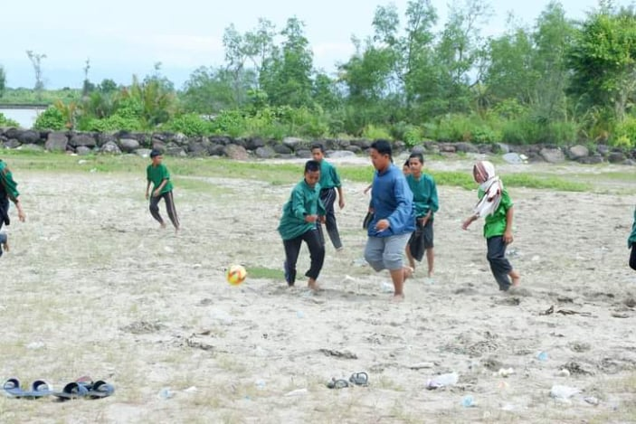
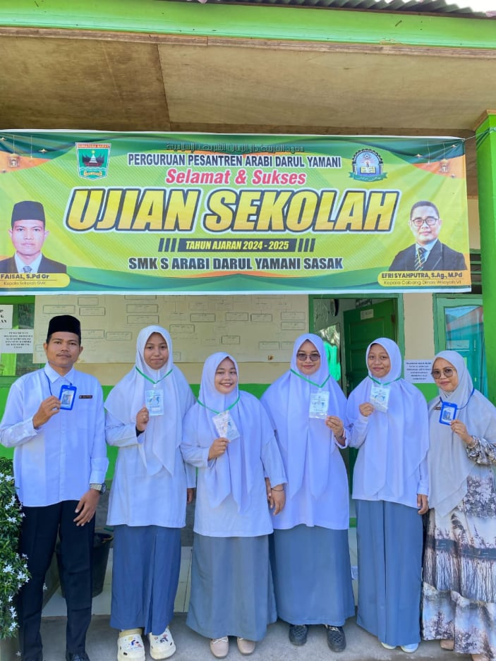

Kegiatan

Apel Pagi
Apel pagi di SMK Darul Yamani adalah kesempatan untuk menyatukan visi, menumbuhkan disiplin, serta memperkuat nilai-nilai Islami dalam diri setiap siswa

Outbound
Tujuan Acara Outbound di SMK
Acara outbound bagi siswa dirancang untuk mengembangkan keterampilan yang tidak didapatkan di dalam kelas, namun sangat penting untuk dunia kerja dan kehidupan sosial.

Ujian Sekolah
Ujian Sekolah (US) adalah penilaian hasil belajar yang dilakukan oleh untuk mengukur pencapaian standar kompetensi lulusan bagi peserta didik. Ini adalah salah satu komponen penting untuk menentukan kelulusan siswa dari jenjang pendidikan SMK